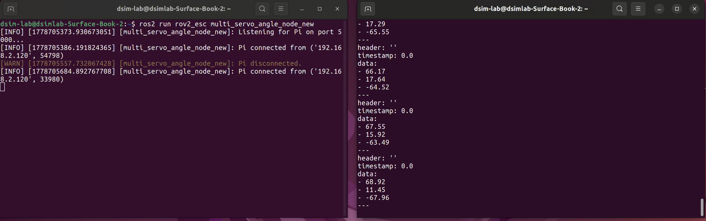
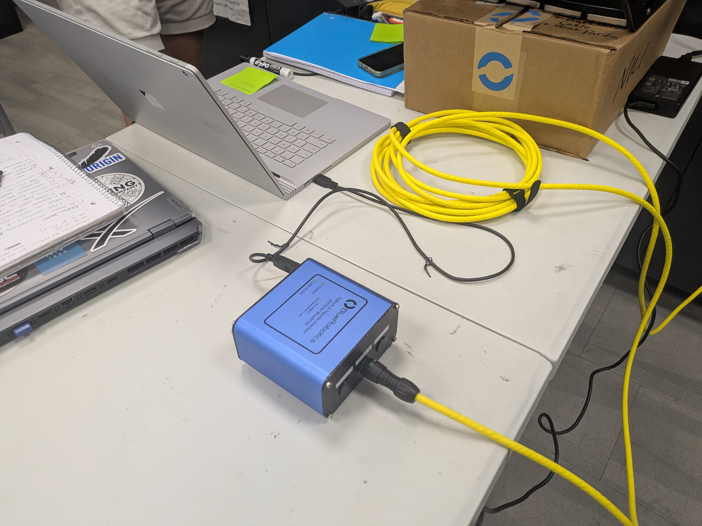
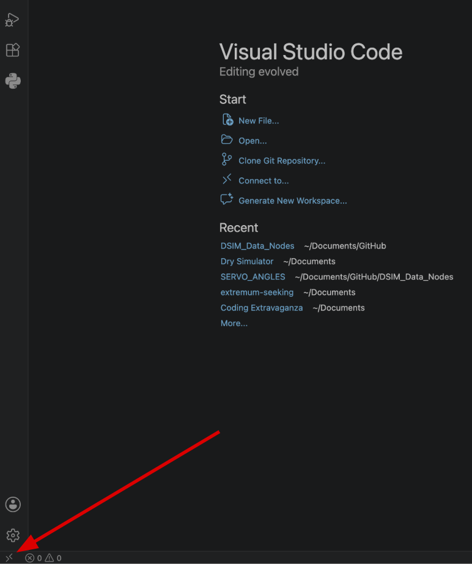
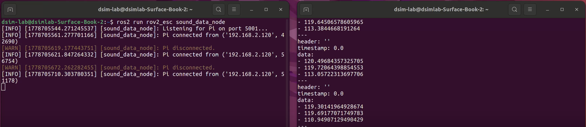

ROS2 Nodes for Acoustic Localization
I developed ROS2 publisher nodes and bridge scripts that convert BlueROV2 sensor data into usable real-time ROS2 topics for an acoustic-localization system. The project connects Arduino servo-angle feedback, Raspberry Pi hardware scripts, DAC HAT hydrophone readings, and socket communication into a cleaner software pipeline for DSIM Lab testing.

Problem
The BlueROV2 acoustic-localization project needed real-time data streams that could be used by an extremum-seeking control algorithm. The raw data was split across multiple pieces of hardware: servo feedback from an Arduino, hydrophone voltage data from DAC HATs, Raspberry Pi scripts, and a PC running ROS2.
Without a clean software bridge, the sensor data could not be reliably converted, transferred, and published into ROS2 topics for testing and algorithm development.
Solution
I wrote the scripts for the ROS2 publisher nodes, the Raspberry Pi-to-PC bridge scripts, and the Arduino sketch used to publish servo angle data. The final pipeline takes hardware-side readings, sends them through socket communication, and publishes usable servo-angle and hydrophone sound data into ROS2.
This page focuses on the software pipeline and ROS2 nodes. The wiring, physical mounting, and hydrophone housing work are covered in the separate Hydrophone Housing / Wiring project.
Servo Angle Data
The servo angle node converts feedback from the rotating hydrophone servo into a ROS2 topic. The Arduino reads the servo feedback signal, calculates the angle, and sends the data to the PC through a bridge script before the ROS2 node publishes it.
- \(t_{high}\): time that the servo feedback signal is high.
- \(T\): full period of the servo feedback signal.
- \(\text{Duty Cycle}\): percent of the period where the signal is high.
The duty cycle is then converted into a raw angular position:
- \(\theta_{raw}\): raw servo angle in degrees.
- \(D\): measured duty cycle percentage.
- 2.9 and 97.1: calibration bounds used for the servo feedback range.
A zeroing offset is applied so the published angle is relative to the desired starting orientation:
- \(\theta_{shifted}\): corrected servo angle published for use by the system.
- \(\theta_{raw}\): raw measured servo angle.
- \(\theta_{zero}\): zeroing offset from the homed servo position.
Hydrophone Sound Data
The hydrophone node converts voltage readings from the hydrophones into underwater sound pressure level data. The Raspberry Pi reads data through the DAC HAT setup, sends the values to the PC, and the ROS2 node publishes the processed sound data.
- \(S\): hydrophone sensitivity.
- \(V\): measured voltage.
- \(P\): acoustic pressure.
Rearranging the sensitivity relationship gives pressure from voltage:
The pressure signal is then converted into RMS pressure:
- \(P_{RMS}\): root-mean-square pressure.
- \(N\): number of pressure samples.
- \(P_i\): individual pressure sample.
Finally, the RMS pressure is converted into underwater sound pressure level:
- \(dB\): underwater sound pressure level.
- \(P_{RMS}\): RMS acoustic pressure.
- \(1\times10^{-6}\): reference pressure used for underwater sound level calculations.
1 / Building the Servo Angle Node
The first major piece was getting servo angle data into ROS2. I wrote the Arduino sketch that reads angle feedback from the servo and the scripts that bridge that data from the hardware side to the PC. From there, the ROS2 node publishes angle data so the localization algorithm can use the current hydrophone orientation.

2 / Bridging Hardware to the PC
The project required bridge scripts because the sensor data was not generated directly on the PC. I wrote scripts that move data from the Raspberry Pi and Arduino side to the PC using socket communication, allowing the ROS2 environment to receive clean data streams from the physical test setup.

3 / Working Through Remote Access
Part of the workflow involved connecting into the Raspberry Pi environment and running scripts remotely. This made it possible to work with hardware-side data while still controlling and monitoring the ROS2 pipeline from the development machine.

4 / Publishing Hydrophone Sound Data
After the angle node, I worked on the hydrophone sound-data pipeline. The node takes voltage-based hydrophone readings, converts them into pressure and sound pressure level data, and publishes the resulting values for localization and signal-processing work.

5 / Running the ROS2 Nodes Together
Once the individual scripts were working, I tested the full node setup together. Running the nodes at the same time helped confirm that the servo-angle and sound-data streams could be monitored, echoed, and used as part of the larger acoustic-localization system.
The videos show the ROS2 nodes running and the BlueROV2 test setup used for acoustic-localization development.